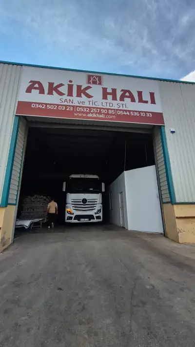
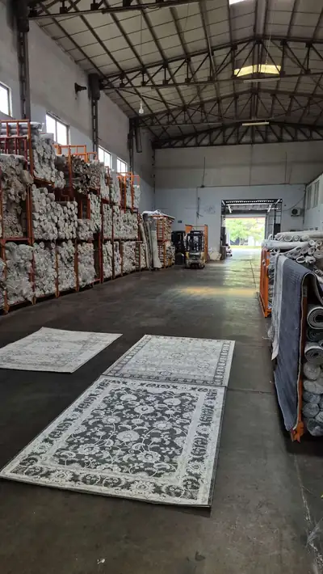
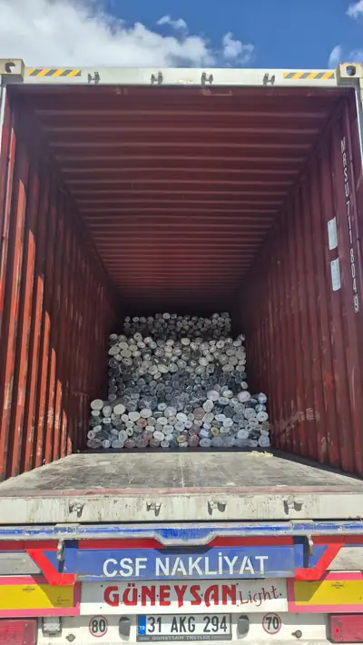
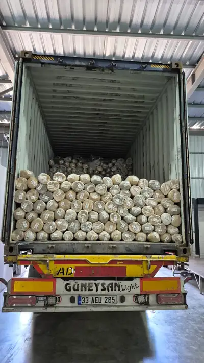
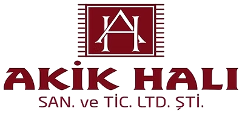

HomeAna sayfa / AboutHakkımızda
About usHakkımızda
Serving you for over 10 years. 10 yılı aşkındır hizmetinizdeyiz.
Our storyHikayemiz
has been supplying Turkish carpets for over 10 years. Today we export to countries and serve wholesale customers across Türkiye from our own warehouse. 10 yılı aşkın süredir halı tedarik ediyor. Bugün ülkeye ihracat yapıyor, kendi depomuzdan Türkiye genelindeki toptan müşterilerimize hizmet veriyoruz.





FounderKurucumuz
Emin Seçilmiş
Founder and owner of Akik Halı San. ve Tic. Ltd. Şti. Akik Halı San. ve Tic. Ltd. Şti. kurucusu ve sahibi
Emin Seçilmiş founded Akik Halı in Gaziantep, the heart of Turkish carpet production, and has led the company for over 10 years. Emin Seçilmiş Carpet carries the same experience, warehouse and production network to wholesale customers in Türkiye and abroad. Emin Seçilmiş, Türk halıcılığının merkezi Gaziantep'te Akik Halı'yı kurdu ve 10 yılı aşkın süredir firmayı yönetiyor. Emin Seçilmiş Carpet, aynı tecrübeyi, depoyu ve üretim ağını yurt içi ve yurt dışındaki toptan müşterilere taşıyor.
- 10+
- years of experienceyıllık tecrübe
- countriesülkeye ihracat
- containers / yearkonteyner / yıl
- designs in stockstokta desen